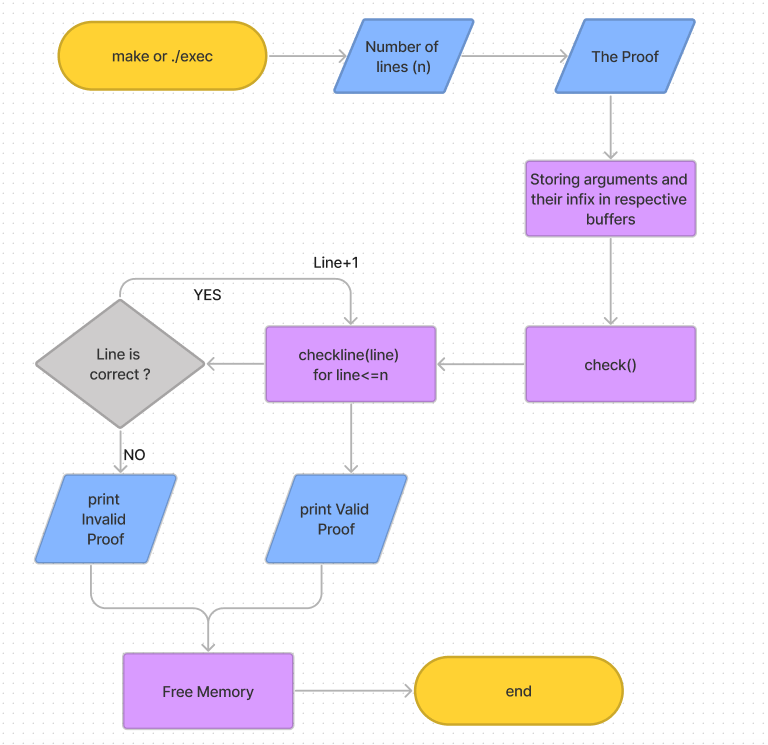

- Authors
- Saksham Attri 2021A7PS2950H, Pranav Dinesh Sharma 2021A7PS2818H, Pritam Basu 2021A7PS2175H
Requirements:
- GCC to compile the C code
- GNU Make
Instructions to run
- Download and extract the repo to
<some-directory>
- Run (for the first time) with :
- For subsequent runs, use :
If running without GNU Make
Run the following in <some-directory>:
gcc -c main.c -o main.o
gcc -c Misc/inf/infixToPrefix.c -o inf.o
gcc -c AND-rule/and_intro.c -o and_intro.o
gcc -c AND-rule/and_elim.c -o and_elim.o
gcc -c OR-rule/or_intro.c -o or_intro.o
gcc -c IMP-rule/imp_elim.c -o imp_elim.o
gcc -c MT/modus_tollens.c -o modus_tollens.o
gcc -o exec main.o inf.o and_intro.o and_elim.o or_intro.o imp_elim.o modus_tollens.o
./exec
Algorithm:

A Flow Chart of the Algorithm
Code Design:
Example Output:
Plans to Extend:
Specifications:
- Architecture: x86_64
- CPU op-mode(s): 32-bit, 64-bit
- Address sizes: 39 bits physical, 48 bits virtual
- Byte Order: Little Endian
- CPU(s): 8
- On-line CPU(s) list: 0-7
- Vendor ID: GenuineIntel
- Model name: Intel(R) Core(TM) i5-1035G1 CPU @ 1.00GHz
- CPU family: 6
- Model: 126
- Thread(s) per core: 2
- Core(s) per socket: 4
- Socket(s): 1
- Stepping: 5
- CPU max MHz: 3600.0000
- CPU min MHz: 400.0000
- BogoMIPS: 2380.80
- Virtualization: VT-x
- Caches (sum of all):
- L1d: 192 KiB (4 instances)
- L1i: 128 KiB (4 instances)
- L2: 2 MiB (4 instances)
- L3: 6 MiB (1 instance)
- RAM: 20 GiB
Problems we faced and Bugs:
We found the assignment really engaging and it was really fun to work in a team environment. This assignment also helped deepen our insight into theoretical concepts behind propositional logic and proof verification. We thank all our instructors for providing us this opportunity.